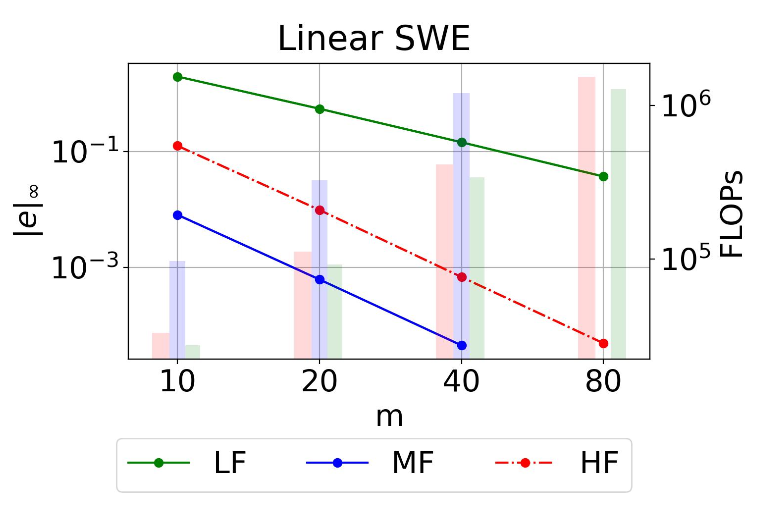
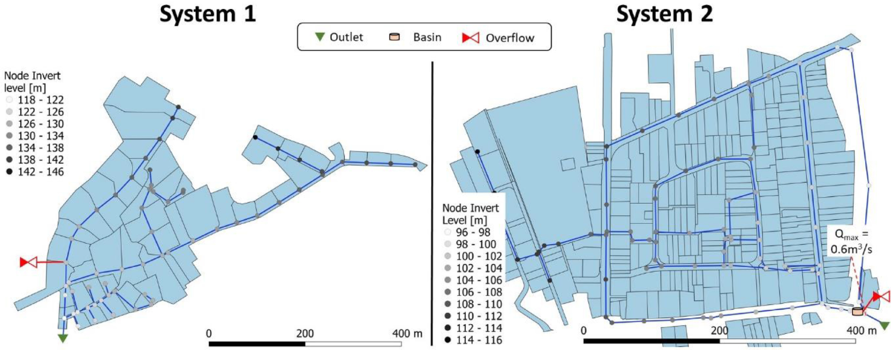

Allan Peter Engsig-Karup
Professor (Assoc) in Computational Mathematics / Scientific Machine learning at Section for Scientific Computing
, Department of Applied Mathematics and Computer Science,
Section for Scientitic Computing,
DTU Compute,
Technical University of Denmark.
Research interests:
- Scientific Computing
- High-Performance Computing
- Scientific Machine Learning
- Natural language processing (NLP) for Human-Device interfaces enabling Virtual Assistants / Agents


Research overview
Current research group:- Jens Visbech, PhD, DTU Compute
- Max Bitsch, Industrial PhD, DTU Compute / DHI Group
- Anders Melander, PhD, DTU Compute
- Freja Petersen, Industrial PhD, DTU Compute / DHI Group
Research overview
- Advance and use modern scientific computing for simulation in areas of engineering applications.
- Advance and use modern data-driven methods / algorithms for predictive and generative tasks of relevance in areas of science and engineering.
- Develop and implement modern state-of-the-art numerical methods / linear algebra for massively parallel high-performance / super computing on modern many-core hardware systems.
- Use large language models from areas of natural language processing for human-device interfaces to design workflows that enable virtual assistants and agents.
Scientific Computing
Scientific computing for simulation, uncertainty quantification, and high-performance computing:- Advanced Numerical Methods
- Multigrid Methods for Solving Large Systems of Equations
- Massively Parallel GPU Acceleration
- Uncertainty Quantification
- Spread of Disease Modelling
- Marine hydrodynamics
- Room Acoustics
- Railway vehicle Dynamics
- Reservoir Simulation
Scientific Machine Learning
Data-driven methods / algorithms for efficient modelling:- Reduced Order Modelling
- Neural Operators
- Physics-Informed Neural Networks
- Physics-Informed Holomorphic Neural Networks
- Multi-fidelity Methods
- Surrogate Modelling
Publications (selected highlights)
|  |
Data-driven Multi-Fidelity Modelling for Time-dependent Partial Differential Equations using Convolutional Neural Networks
We present a general multi-fidelity (MF) framework which is applied through utilizing flexible-order explicit finite difference numerical schemes using convolutional neural networks (CNNs) by combining low-order simulation data with higher order simulation data obtained from numerical simulations based on partial differential equations (PDEs). This allows for improving the performance of low-order numerical simulation through learning from the data how to correct the numerical schemes to achieve improved accuracy. Through the lens of numerical analysis we evaluate the accuracy, efficiency and generalizability of constructed data-driven MF-models. To illustrate the concept, the construction of the MF models uses CNNs and is evaluated for numerical schemes designed for solving linear PDEs; the heat, the linear advection equation and linearized 1D shallow water equations. The numerical schemes allow for a high level of explainability of data-driven correction terms obtained via CNNs through numerical analysis of truncation errors. It is demonstrated that data-driven MF models is a means to improve the accuracy of LF models through operator correction. Freja Petersen, Allan P. Engsig-KarupICLR, 2024 Link to paper |

|
Sound propagation in realistic interactive 3D scenes with parameterized sources using deep neural operators
We address the challenge of acoustic simulations in three-dimensional (3D) virtual rooms with parametric source positions, which have applications in virtual/augmented reality, game audio, and spatial computing. The wave equation can fully describe wave phenomena such as diffraction and interference. However, conventional numerical discretization methods are computationally expensive when simulating hundreds of source and receiver positions, making simulations with parametric source positions impractical. To overcome this limitation, we propose using deep operator networks to approximate linear wave-equation operators. This enables the rapid prediction of sound propagation in realistic 3D acoustic scenes with parametric source positions, achieving millisecond-scale computations. Nikolas Borrel-Jensen, Somdatta Goswami, Allan P. Engsig-Karup, George Em Karniadakis, Cheol-Ho JeongPNAS, 2024 Link to paper |
|  |
Accelerating hydrodynamic simulations of urban drainage systems with physics-guided machine learning
We propose and demonstrate a new approach for fast and accurate surrogate modelling of urban drainage system hydraulics based on physics-guided machine learning. The surrogates are trained against a limited set of simulation results from a hydrodynamic (HiFi) model. Our approach reduces simulation times by one to two orders of magnitude compared to a HiFi model. It is thus slower than e.g. conceptual hydrological models, but it enables simulations of water levels, flows and surcharges in all nodes and links of a drainage network and thus largely preserves the level of detail provided by HiFi models. Rocco Palmitessa, Morten Grum, Allan Peter Engsig-Karup, Roland LoweWater Research, 2022 Link to paper |

|
A massively parallel GPU-accelerated model for analysis of fully nonlinear free surface waves
We implement and evaluate a massively parallel and scalable algorithm based on a multigrid preconditioned Defect Correction method for the simulation of fully nonlinear free surface flows. A dedicated numerical model based on the proposed algorithm is executed in parallel by utilizing affordable modern special purpose graphics processing unit (GPU). We describe and demonstrate how this approach makes it possible to do fast desktop computations for large nonlinear wave problems in numerical wave tanks (NWTs) with close to 50/100 million total grid points in double/single precision with 4 GB global device memory available. A new code base has been developed in C++ and compute unified device architecture C and is found to improve the runtime more than an order in magnitude in double precision arithmetic for the same accuracy over an existing CPU (single thread) Fortran 90 code when executed on a single modern GPU. Allan Peter Engsig-Karup, Morten Gorm Madsen, Stefan Lemvig GlimbergInternational Journal for Numerical Methods in Fluids, 2011 Link to paper |